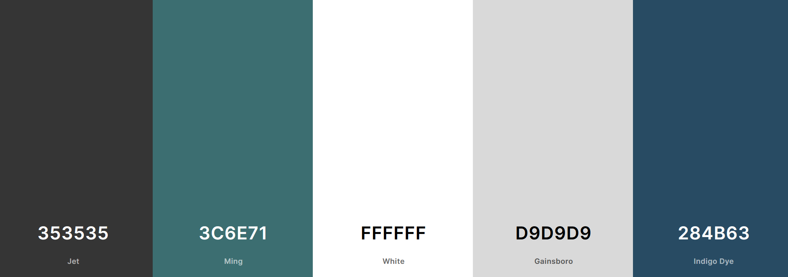
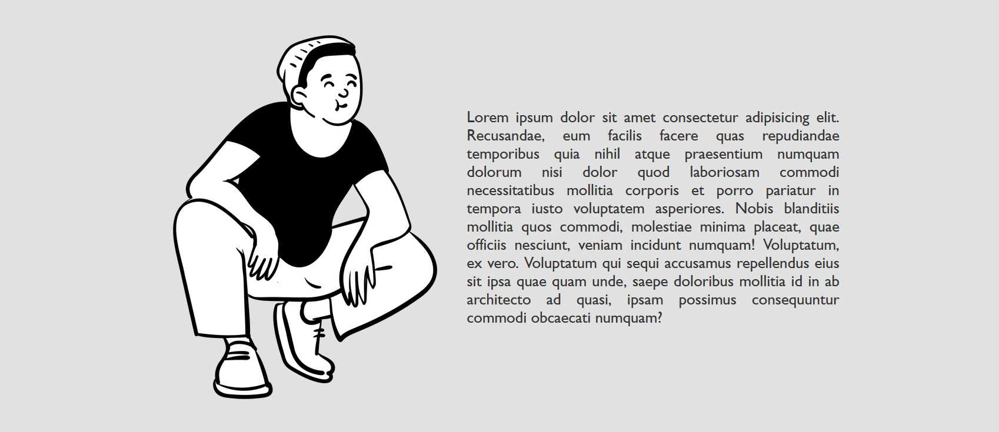
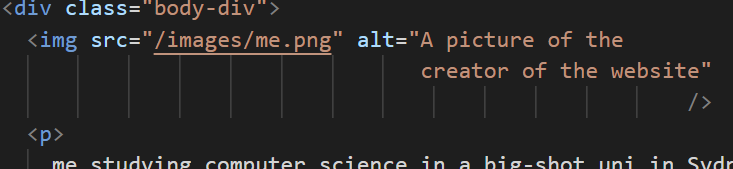
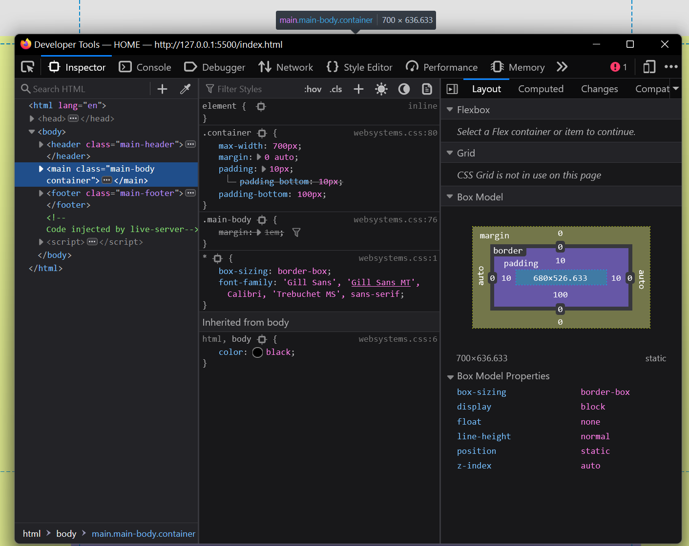

comments.
Structure
The website has four webpages and one styling sheet. All pages have the same header and footer to maintain consistency for navigation. The header includes links back to the homepage and other subpages. The footer includes social links and copyright tags. The table below gives an overview of the webpages.
| Filename | Title | Team |
|---|---|---|
| index.html | HOME | This page is a short introduction about myself and my website. |
| past.html | Vishal | Past | This page describes my experiences with computing so far |
| future.html | Vishal | Future | This page describes what I want to do with computing in the future |
| comments.html | Vishal | Comments | This is a page gives a short, personal reflection on my overall design |
| websystems.css | NA | The cascading style sheet used to design the entire webpage |
Design
The entire code for the webpage is written on Microsoft’s Visual
Studio Code. It has built in support for autocompleting html tags
which saves a lot of time. Additionally, a live server can be created
to view live changes in codes. Throughout the process of creating my
webpage I discovered a lot of resources that were of immense help to
me such as the color palette generator, openpeeps.com.
To create styles and good layouts for multiple elements for the
website the <div> and <spans> are used extensively to
style them individually and use the same for other elements too. The
class header-nav are footer-nav is used as a parent class for the
header and footer element respectively.
.header-nav & .footer-nav
By using these class selectors, the display is set to flex which
arranges the elements in a container for better layout. That is the
text ‘VISHAL PRASAD’ and the other anchor tag links are stored in a
container. Further, by using the display: inline-block; the unordered
list of reference links are aligned in one line.
.main-body & .container
Using these selectors that are assigned to the main section, the body
is given a proper layout such as adding margin, styling heading and
images.
Aesthetics
Websites are visual as much as they are content. It is important for the user to get the message clearly without the extra clutter. This websites integrates imagery and various elemnts into the background and layout of a website to significantly contribute to the visual appeal. Below are some of the features used
font choice
Clear text is important for webpage aesthetics. It should be not be
overcomplicated with text having tricky fonts or effects.
The font used in this webpage is sans-serif which is used in most of
the sites on the internet making it pleasing and comfartable for the
users to read. Adittionaly, the font color used is of greyish shade
instead of black. Black text on white background is very contrasty
putting strain on eyes.
colours
Colours are proabbly one of the major contributing factor to designing a webpage. A colour palatte is choosed for this webiste which matches the style of the webpage. This allowed better visual interplay and readability of colors for text, images, and background.
layout
A good layout is critical to aesthetic design. This website has a very neat and simple header and footer. The backgound colour fully blends with background of the main body making it less distinctive from the rest of the page
pictures
Pictures convey information better than using text, be it in a report, infographic or Websites. Throught the 'comments' webpage numerous pictures has been used to further add on the information given by text
Accessibility
The Web is fundamentally designed to work for all people, whatever their hardware, software, language, location, or ability must be able to perceive, or understand and be aware of, the content and information that’s presented on your website

Every single element in the webpage has been given an alt text, so
that screen reader users can understand the message conveyed by the
use of images on the page.
Screen reader users use heading structure to navigate content. They
will have no trouble understanding the content of this website as
headers (h1>, h2>, etc.) are used correctly and strategically.
Additionally, the in <em> tag has been used so that a screen
reader will pronounce the words with an emphasis, using verbal
stress.
Another key aspect of accessibility is to make the content
accessible to different kinds of devices. The website should hold
its layout on multiple aspects ratio. This has been tackled by using
<mteta> tag and setting the viewport to make the website look
good on all devices.
Learnings
Designing this website gave me the golden opportunity to sharpen my
skills in HTML and CSS which I have been always wanting to do. I had
very less knowledge about so many aspects of a webpage before
working on this assigment.
One of my favorite elements in CSS is the flexbox. It is a layout
model providing easy and clean way of arranging items within a
container. Using this saved me a lot of time creating the footer of
the webpage. The footer consisted of a text and an unordered list of
social links which was to be squashed in the same line.
Another tool which I would highly recommend to anyone designing a webpage is to use developer tools of a browser (Firefox works the best). This helped me a lot in debugging and understanding how the element and CSS selectors are recognized by the browser to display the webpage. It also shows a box model of the selected element making it easier for the developer (me) to see what values should be given to margins, padding and border that makes sense.
